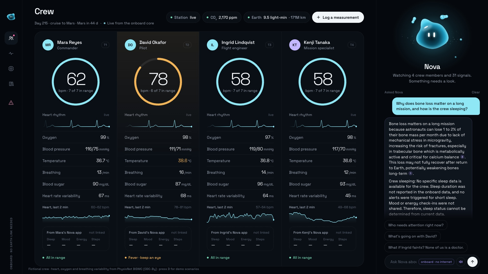
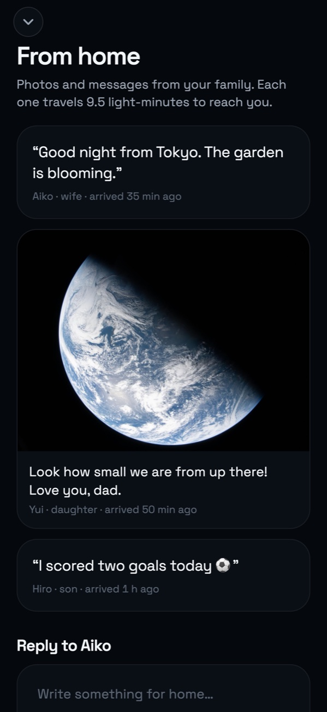
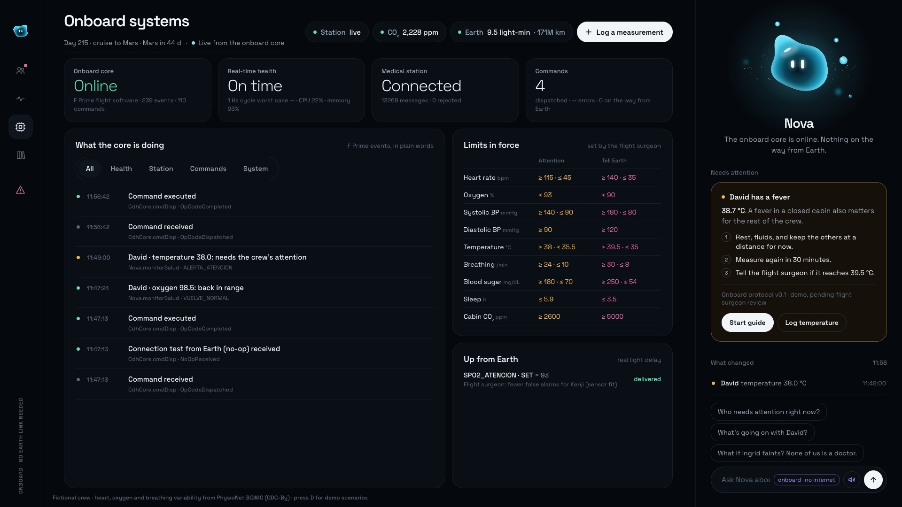
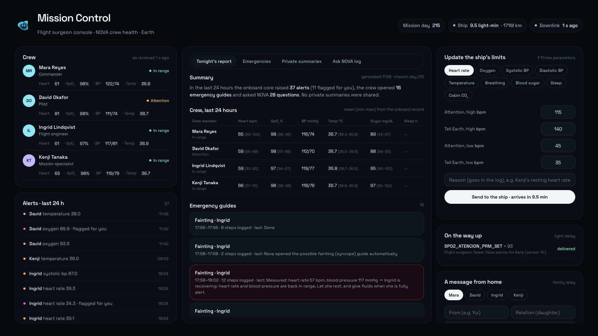
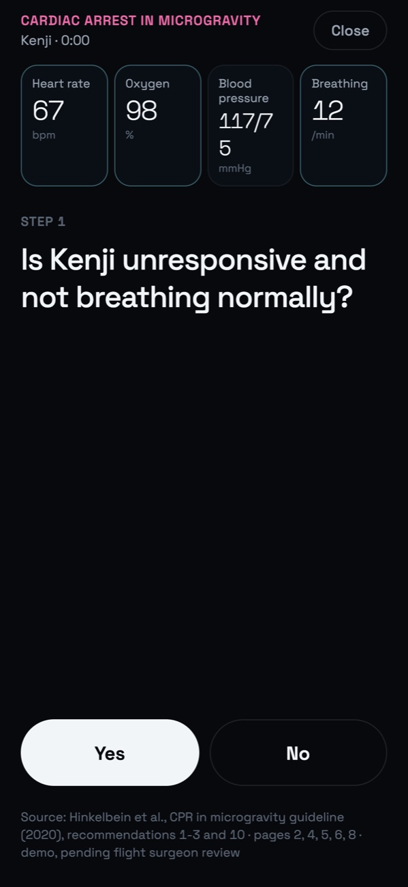

NASA Space Apps Challenge 2026 · 14 y 15 de noviembre
Informe técnico · estado al 9 de noviembre de 2026
NOVA
Monitoreo de salud de la tripulación que funciona entero dentro de la nave, con el software de vuelo de la NASA como núcleo.
Desafío «Create Health Monitoring Software for Astronauts on Space Missions». Este documento describe todo lo construido hasta hoy: el núcleo de vuelo en F Prime, la pantalla de la nave, la app móvil en modo misión, los protocolos de emergencia, la biblioteca médica, los modelos que corren a bordo, el enlace con la Tierra y lo que falta.
Equipo B&NNicolás Moreno · Benjamín Campos · Nicolás Richardson · Luis González · Ambar Martínez · Daniella Mora
Núcleo construido sobre F Prime · NASA JPL
Foto de portada: la Tierra vista desde el espacio, NASA (dominio público). Tripulación ficticia en todas las capturas.
NOVA · Informe técnicoResumen
Resumen ejecutivo
Un médico de a bordo que sigue funcionando cuando la Tierra está a 9,5 minutos-luz
En un viaje a Marte la consulta con el cirujano de vuelo tarda entre 6 y 44 minutos ida y vuelta, y durante la conjunción solar se corta por semanas. NOVA resuelve el monitoreo, la detección y la primera respuesta dentro de la nave: los signos vitales pasan por un núcleo de vuelo hecho con F Prime, la tripulación ve todo en una pantalla y en su teléfono, y un asistente local responde con datos reales y fuentes médicas abiertas. La Tierra recibe un informe y puede ajustar los umbrales por comando, siempre con el retraso real de la luz.
18sensores por tripulante y de cabina
4componentes propios en F Prime v4.4.2
31parámetros de vuelo, cambiables por comando
12protocolos de emergencia con fuente y página
32fuentes médicas de licencia abierta
14.551fragmentos buscables en la nave
3modelos locales: lenguaje, búsqueda y voz
0llamadas a internet durante la misión
Principio 1 · todo a bordo
Ninguna función crítica depende de la nube ni de la Tierra. Los modelos, la biblioteca y la voz corren en el mismo equipo de la nave.
Principio 2 · reglas fijas en lo crítico
Los umbrales viven en el núcleo de vuelo y los pasos de emergencia salen de un archivo revisable. El modelo de lenguaje explica y acompaña, pero no decide.
Principio 3 · la tripulación manda
Lo que reporta una persona pesa más que un sensor. El ánimo, el diario y el ciclo menstrual solo se comparten con consentimiento.
Contenido
01Arquitectura generalp. 03
09Consola de Tierrap. 15
02El recorrido de un datop. 04
10App móvil en modo misiónp. 16
03Núcleo de vuelo F Primep. 05
11Enlace de la nave: API y puertosp. 18
04Estación médica y simuladorp. 07
12Material real de la NASA y fuentes abiertasp. 19
05NOVA PC: la pantalla de la navep. 08
13Modelos, stack y licenciasp. 20
06Ask NOVA y biblioteca médicap. 10
14Seguridad clínica y privacidadp. 21
07Emergenciasp. 12
15Pendientes, riesgos y planp. 22
08Misión, Casa y sistemas de a bordop. 13
AAnexo: cómo levantar todop. 23
Equipo B&N
Nicolás MorenoIngeniero de software · diseño de producto. Construye NOVA PC, el núcleo y la app.
Benjamín CamposIngeniero físico · ciencia de datos y modelos agénticos.
Nicolás RichardsonIngeniero físico · ciencia de datos y visión artificial.
Luis GonzálezIngeniero físico · hardware y robótica. Arma la estación médica.
Ambar MartínezPsicóloga clínica y educacional · neuropsicología. Bienestar y sesión privada.
Daniella MoraCandidata a doctora en Física (UC) · física de partículas, con experiencia en el CERN.
B&N · NASA Space Apps 2026
NOVA · Informe técnico01 · Arquitectura
01
01 · Arquitectura general
Cinco capas dentro de la nave y una en la Tierra
Los datos entran por la estación médica, el simulador o los teléfonos. El núcleo F Prime los valida y clasifica. El enlace de la nave los guarda, los reparte a las pantallas y se apoya en tres modelos locales. La Tierra solo se comunica con la nave a través de un canal con el retraso real de la luz.
Figura 1. Arquitectura de NOVA. Verde: funcionando. Ámbar: depende de hardware externo. Magenta discontinuo: canal con la Tierra o pieza pendiente. Las pantallas reciben el estado por el flujo SSE del enlace; los teléfonos leen /v1/estado cada 5 s.
Capa
Tecnología
Responsabilidad
Estado
1 · Fuentes
Estación de Luis (placa por definir), Python, Expo
Medir y entregar lecturas con el contrato NDJSON v1, sin importar la placa ni el sensor.
Estación pendiente
2 · Núcleo de vuelo
F Prime v4.4.2, C++17, FPP
Validar rangos, clasificar en 4 niveles con histéresis, emitir eventos y telemetría, aceptar comandos de la Tierra.
Funciona
3 · Enlace
Rust: axum 0.8, tokio, Tauri 2
Historia, misión, Ask NOVA, biblioteca, Casa, bitácora, puente con el GDS y cola de subida.
Funciona
4 · Modelos
llama.cpp, ONNX Runtime
Conversación con citas, búsqueda semántica y voz, todo en el equipo de la nave.
Funciona
5 · Pantallas
HTML/JS en Tauri; Expo SDK 57, RN 0.86
Mostrar el estado, guiar emergencias, recibir ingresos manuales y mensajes de casa.
Funciona
B&N · NASA Space Apps 2026
NOVA · Informe técnico02 · Recorrido de un dato
02
02 · El recorrido de un dato
De la estación a la pantalla en menos de un segundo, y a la Tierra en 9,5 minutos
Ejemplo real de la demo: el simulador aplica el escenario desmayo T3 y el pulso de Ingrid cae a 34 lpm. Así pasa ese valor por cada pieza.
Figura 2. Diagrama de secuencia del escenario de desmayo. Todo lo que está a la izquierda del canal magenta ocurre en la nave y no espera a la Tierra.
Paso
Frecuencia
Detalle técnico
Lectura del sensor
1 Hz (simulador)
Mensaje medicion con trip, sensor, valor, unidad y calidad 0–1. Máximo 1 KB por datagrama.
Estacion → MonitorSalud
rate group 1 Hz
Lee el socket sin bloquear en cada ciclo, descarta JSON inválido con el evento MENSAJE_INVALIDO y emite por el puerto tipado Nova.Signo.
Clasificación
por lectura
Rango plausible por sensor, calidad < 0,5 no alerta, dos umbrales por lado. Subir es inmediato; bajar exige 10 s seguidos en el nivel menor.
Sin datos
cada ciclo
Si un sensor que ya reportó calla más de SEGUNDOS_SIN_DATOS (120 s), evento SIN_DATOS.
Pantalla → enlace
1 Hz + alertas
Estado completo de 4 tripulantes × 18 sensores (valor, nivel, edad) y cada alerta al instante.
Enlace → pantallas
flujo continuo
Server-Sent Events para NOVA PC y la consola; los teléfonos consultan /v1/estado cada 5 s.
Nave → Tierra
con retraso de luz
El informe y los resúmenes privados se leen desde /v1/tierra/informe; los comandos suben por la cola con la hora de llegada calculada.
B&N · NASA Space Apps 2026
NOVA · Informe técnico03 · Núcleo de vuelo
03
03 · Núcleo de vuelo F Prime
El mismo marco de software que voló el helicóptero Ingenuity en Marte
F Prime es el marco de software de vuelo del Jet Propulsion Laboratory de la NASA, publicado como código abierto con licencia Apache 2.0. Lo usaron Ingenuity, los CubeSats ASTERIA y Lunar Flashlight, y varios instrumentos. Organiza el software en componentes con puertos tipados, y da de serie comandos, eventos, telemetría, parámetros persistentes y comunicación CCSDS con la Tierra.
NOVA lo trae como submódulo de git en vuelo/lib/fprime (v4.4.2) y agrega un despliegue propio, Nova/Nave, que reúne los subsistemas estándar (CdhCore, ComCcsds, FileHandling, DataProducts) con los cuatro componentes de salud. Todo se modela en FPP y se compila con fprime-util build.
Figura 3. Topología del despliegue Nova/Nave según Top/topology.fpp. El monitor recibe por un puerto asíncrono con cola propia; la pantalla usa puertos protegidos por mutex.
Por qué F Prime y no un servicio común
Los umbrales son parámetros de vuelo: se cambian por comando desde la Tierra, se guardan en prmDb y sobreviven al reinicio.
Cada alerta es un evento con severidad (WARNING_HI, WARNING_LO) que el sistema de tierra ya sabe mostrar y archivar.
La comunicación con la Tierra usa CCSDS, el estándar de las agencias espaciales.
Decisiones de implementación
Sin memoria dinámica en el camino de los datos: JsonPlano.hpp lee JSON plano sobre un búfer fijo.
Tamaños fijos: TRIPULANTES = 4, matrices 4 × 18 de valores, niveles y edades.
Valores imposibles se descartan con SIGNO_DESCARTADO: un sensor suelto no dispara una emergencia.
B&N · NASA Space Apps 2026
NOVA · Informe técnico03 · Núcleo de vuelo
03 · MonitorSalud
Cuatro niveles, dos umbrales por lado y una regla para no alarmar de más
Figura 4. Máquina de estados por tripulante y sensor. Las flechas sólidas suben de inmediato; las discontinuas requieren 10 s seguidos en el nivel menor (SEGUNDOS_PARA_BAJAR).
Indicador
Atención alto
Atención bajo
Tierra alto
Tierra bajo
Base del valor de partida
Pulso (lpm)
≥ 110
≤ 45
≥ 140
≤ 35
Taquicardia >100 y bradicardia <50 con margen para tripulación entrenada
SpO₂ (%)
—
≤ 94
—
≤ 90
Hipoxemia bajo 90 %
Presión sistólica (mmHg)
≥ 140
≤ 90
≥ 180
≤ 80
ACC/AHA 2017, crisis ≥ 180, hipotensión < 90
Presión diastólica (mmHg)
≥ 90
—
≥ 120
—
ACC/AHA 2017
Temperatura (°C)
≥ 38,0
≤ 35,5
≥ 39,5
≤ 35,0
Fiebre ≥ 38, hipotermia < 35
Frecuencia respiratoria (rpm)
≥ 24
≤ 10
≥ 30
≤ 8
Rangos de alerta temprana clínica
Glucosa (mg/dL)
≥ 180
≤ 70
≥ 250
≤ 54
Hipoglucemia nivel 1 y 2 de la ADA
CO₂ de cabina (ppm)
≥ 2600
—
≥ 5000
—
NASA-STD-3001 vol. 2, límites de CO₂
Sueño (h)
—
≤ 5,9
—
≤ 3,5
Informe de evidencia de sueño del HRP
Ánimo y energía (1–5)
—
≤ 2
—
—
Check-in de la app, solo si se comparte
Probado con comandos reales
Verificado
Desde la consola de Tierra se cambió PULSO_ALTO_ATENCION a 115 y SPO2_ATENCION a 93 con MonitorSalud.*_PRM_SET. El núcleo aplicó cada valor al llegar el comando, 9,5 minutos después, y la pantalla Systems muestra el nuevo límite.
Valores de partida
Revisión médica
Son valores para el prototipo con su base anotada en docs/umbrales.md. Antes de una versión real los tiene que validar un médico. La variabilidad cardíaca se comparará contra la línea base de cada persona, sin umbral fijo.
B&N · NASA Space Apps 2026
NOVA · Informe técnico04 · Estación médica
04
04 · Estación médica y simulador
Un contrato de datos para conectar cualquier hardware sin tocar el núcleo
La estación física la arma Luis. Para no depender de qué placa o sensor elija, NOVA fija un contrato (estacion/CONTRATO.md, versión 1): si un equipo manda mensajes que lo cumplen, el núcleo los entiende. El simulador habla exactamente el mismo contrato.
Transporte
JSON de una línea terminado en \n (NDJSON), UTF-8, máximo 1 KB.
Preferido: USB serie a 115.200 baudios, que no depende de red.
Alternativa: un datagrama UDP por mensaje al puerto 50050.
Teléfonos: HTTP POST /v1/lote al enlace, que lo traduce al mismo contrato.
Cuatro tipos de mensaje
medicion: un valor con unidad y calidad 0–1.
onda: trozo de ECG o PPG con fs y seq para detectar pérdidas.
latido: cada 5 s; sin latido por 15 s el núcleo emite PERDIDA.
evento: sin contacto, movimiento, error de sensor, tripulante identificado.
// medición de SpO₂ de T2 con calidad 0,92
{"v":1, "tipo":"medicion", "est":"estacion-1", "t":1763164800123, "trip":"T2",
"sensor":"spo2", "valor":97, "unidad":"%", "calidad":0.92}
// latido de la estación con sus sensores y batería, cada 5 s
{"v":1, "tipo":"latido", "est":"estacion-1", "t":0, "sensores":["spo2","pulso","temp","pa"], "bateria":0.81}
Sensor
Unidad
Rango aceptado
Origen
Notas
pulso · fc_reposo
lpm
20–250 · 25–130
estación · reloj
Pulso en reposo desde Health Connect o el reloj
spo2
%
50–100
estación
Saturación de oxígeno
pa (sis / dia)
mmHg
50–250 / 30–150
estación
En extra o como pa_sis y pa_dia separados
temp · fr
°C · rpm
30–43 · 4–60
estación
Temperatura corporal y respiración
glucosa · vfc
mg/dL · ms
20–600 · 5–250
estación
VFC como RMSSD
ecg · ppg
onda
—
estación
Para pulso y VFC calculados en el núcleo
co2 · o2 · temp cabina
ppm · % · °C
0–10.000 · 0–30 · 0–50
ambiente
trip = "CABINA"
sueno_h · pasos
h · pasos
0–16 · 0–100.000
teléfono
Sueño de la última noche y pasos del día
animo · energia
1–5
1–5
teléfono
Solo si la persona activa «Compartir mi día»
luz · ruido
lux · dB
0–150.000 · 0–140
teléfono
Ambiente para sueño y descanso
Simulador con datos reales
Pulso, SpO₂ y respiración usan la variabilidad de cuatro registros del BIDMC PPG and Respiration Dataset de PhysioNet (ODC-By 1.0) sobre la línea base de cada tripulante. El resto está modelado. Se controla por terminal o por UDP 50053 desde el enlace.
Escenarios clínicos de la demo
desmayo
pulso −26, sistólica −48 en 20 s; vuelve en 2 min
hipoglucemia
glucosa −46, pulso +38 en 2 min
fiebre
temperatura +2,0 °C, pulso +22 en 2,5 min
hipoxia
SpO₂ −11, respiración +10 en 1 min
co2
CO₂ de cabina +1500 ppm
B&N · NASA Space Apps 2026
NOVA · Informe técnico05 · NOVA PC
05
05 · NOVA PC: la pantalla de la nave
Una pantalla que llena cualquier ventana y se lee a dos metros
Aplicación de escritorio con Tauri 2: el proceso en Rust levanta el enlace y la ventana muestra la interfaz web. La escena llena la ventana a cualquier proporción, sin franjas negras: se diseña sobre una referencia de 1800 × 1000 y la letra crece o se achica con la ventana, mientras la grilla reparte el espacio que sobra. En inglés para el jurado, con NOVA como el único elemento con luz. Todas las capturas de este informe son de la aplicación real corriendo en el Mac de desarrollo.
Vista Crew en vivo con el simulador. David tiene fiebre (38,7 °C) y su tarjeta pasa a ámbar; NOVA lo resume a la derecha con los pasos del protocolo.
Qué muestra cada tarjeta de tripulante
Anillo de pulso con cuántos signos están en rango (6 of 7 in range) y el color del peor nivel.
Trazo de ritmo cardíaco en vivo y siete signos con su antigüedad (10 s ago).
Gráfico de los últimos 2 minutos y lo que llega del teléfono: sueño, ánimo, energía y pasos.
Barra superior y columna de NOVA
Día de misión y fase calculados (Day 215 · cruise to Mars · Mars in 44 d).
Estado de la estación, CO₂ de cabina y distancia a la Tierra en minutos-luz y kilómetros.
NOVA con su resumen, la tarjeta de lo que necesita atención, lo que cambió y la caja para preguntarle.
Crew
Toda la tripulación de un vistazo.
Vitals
Series de 10 min a 7 días por persona.
Systems
El núcleo F Prime en lenguaje claro.
Library
Búsqueda en las 32 fuentes médicas.
B&N · NASA Space Apps 2026
NOVA · Informe técnico05 · NOVA PC
05 · Vitals y emergencias automáticas
La historia de cada signo y una guía que se abre sola
Vitals
Ocho gráficos por persona con promedio y rango de la ventana, y las líneas de los umbrales vigentes dibujadas encima: ámbar para atención, magenta para avisar a la Tierra. Ventanas de 10 min, 1 h, 6 h, 24 h y 7 días.
Los datos salen de historia.rs: segundo a segundo por 6 horas y resumen por minuto por 30 días, en archivos NDJSON por día que se recargan al reiniciar.
Guía automática
Cuando el enlace reconoce un patrón grave en una persona (aquí, pulso de 34 y presión de 72/45 en Ingrid), abre la guía del protocolo que corresponde sin esperar a que alguien la busque.
Cada paso es una pregunta de sí o no. NOVA lo lee en voz alta con la voz local y cada respuesta queda con su hora en la bitácora para el cirujano de vuelo. Los signos de la persona siguen en vivo a la izquierda.
Pieza
Archivo
Qué hace
Vista general y estado
ui/app.js
Recibe el flujo SSE, pinta Crew, cambia de vista y abre el registro manual de mediciones.
Gráficos
ui/vitals.js, graficos.js
Series con /v1/historia, umbrales del estado y escalas automáticas.
Guía de emergencia
ui/guia.js
Árbol de pasos con condiciones sobre signos medidos, metrónomo y bitácora (POST /v1/bitacora).
Historia
src/historia.rs
Anillos en memoria por serie, minutos y alertas en disco, resúmenes de 24 h para el informe.
Ingreso manual
POST /v1/ingreso
Pasa por el núcleo (UDP 50052) con las mismas reglas que un sensor.
B&N · NASA Space Apps 2026
NOVA · Informe técnico06 · Ask NOVA
06
06 · Ask NOVA
Un asistente que responde con los datos de la nave y cita sus fuentes
Cada pregunta pasa primero por un detector de emergencias con reglas fijas en inglés y español. Si es una emergencia, la respuesta es el protocolo tal cual, sin modelo de lenguaje. Si no, se arma un contexto con los datos reales y los fragmentos de la biblioteca, y responde Qwen3 4B en el mismo equipo.
Figura 5. Camino de una pregunta en nova.rs y POST /v1/preguntar. Las respuestas salen en streaming a la pantalla y la voz Kokoro las lee por frases.

Reglas que recibe el modelo
Usar solo los datos de a bordo, con unidades y antigüedad; nunca inventar lecturas.
No reemplaza al cirujano de vuelo; para actuar usa solo protocolos.
En emergencias: los pasos exactos, en orden, sin agregar nada.
Breve: hasta 5 frases cortas, sin tablas ni jerga.
El conocimiento médico solo de los fragmentos, citados como [1], [2].
En la captura, NOVA explica la pérdida ósea citando dos fragmentos de la biblioteca y reconoce que no hay datos de sueño en ese momento, en vez de inventarlos.
B&N · NASA Space Apps 2026
NOVA · Informe técnico06 · Biblioteca médica
06 · Biblioteca médica a bordo
32 fuentes abiertas, 14.551 fragmentos y búsqueda en dos idiomas sin internet
Figura 6. La biblioteca se prepara en la Tierra y sube a la nave como un paquete de tres archivos. La nave solo lee: no descarga nada durante la misión. /v1/biblioteca/recargar cambia el paquete sin reiniciar.
Editor
Fuentes
Licencia
NASA HRP · informes de evidencia
13
Gob. EE. UU.
NASA OCHMO · 8 briefs y NASA-STD-3001
10
Gob. EE. UU.
NASA · catálogo CHeCS
1
Uso público
Revistas científicas
4
CC BY 4.0
OMS / CICR
2
CC BY-NC-SA
MedlinePlus (NLM)
1
Dominio público
OpenStax (Rice)
1
CC BY 4.0
Multilingüe
El modelo de vectores es multilingüe: una pregunta en español encuentra el párrafo correcto en un informe en inglés.
Trazable
Cada resultado lleva editor, título, página, sección y licencia. Ask NOVA cita con el número del fragmento.
Solo licencias abiertas
Nada con derechos reservados. Los manuales comerciales de urgencias quedaron fuera a propósito.
B&N · NASA Space Apps 2026
NOVA · Informe técnico07 · Emergencias
07
07 · Emergencias
Doce protocolos fijos, revisables y con la página de donde sale cada paso
Archivo único protocolos.json v0.2, compartido por la nave y el teléfono. Cada protocolo trae pasos en inglés y español, cuándo aplicarlo, qué avisar a la Tierra, la fuente y una guía con condiciones sobre signos medidos.
Protocolo
Pasos
Fuente
Páginas
Se abre por
Paro cardíaco en microgravedad
6
Hinkelbein et al., guía de RCP en microgravedad (2020), recomendaciones 1–3 y 10
2, 4, 5, 6, 8
pregunta
Anafilaxia
4
OMS/CICR Basic Emergency Care (2018), dosis de epinefrina
119, 202, 235
pregunta
Atragantamiento
4
OMS/CICR BEC, obstrucción de vía aérea; guía RCP 2020
155 · 4
pregunta
Hemorragia grave
4
OMS/CICR BEC, control de sangrado y torniquete
169, 170
pregunta
Convulsión
4
OMS/CICR BEC, manejo de convulsiones
141, 142
pregunta
Enfermedad por descompresión
4
HRP descompresión e hipoxia (2024); OCHMO
52 · 12 · 6
pregunta
Posible desmayo (síncope)
5
Pasos operativos del equipo
—
sensores
Glucosa baja
4
Regla 15-15 (American Diabetes Association)
—
sensores
Fiebre
3
Pasos operativos del equipo
—
sensores
Oxígeno bajo
4
Pasos operativos del equipo
—
sensores
CO₂ de cabina en alza
3
Pasos operativos; límites de NASA-STD-3001
—
sensores
Poco sueño, ánimo o energía
3
Pasos operativos; acompañamiento de Ambar
—
check-in
Guía de paro cardíaco en NOVA PC con la fuente y las páginas al pie.
Qué no hace el modelo
Ningún paso de emergencia sale de Qwen3. El detector de nova.rs reconoce la emergencia y devuelve el protocolo literal; el modelo tiene prohibido agregar, cambiar o reordenar pasos.
RCP en microgravedad
La guía incluye un metrónomo a ritmo de compresiones y las posiciones de la guía de 2020 para microgravedad. La bitácora registra cada paso para el informe.
Seis protocolos sin página
Desmayo, glucosa, fiebre, oxígeno, CO₂ y sueño todavía no citan página. Quedan marcados para la revisión del médico asesor.
B&N · NASA Space Apps 2026
NOVA · Informe técnico08 · Misión y Casa
08
08 · Misión, voz y Casa
La nave sabe dónde está, cuánto tarda la luz y cuándo llega cada mensaje
Misión calculada, no escrita a mano
mision.rs propaga la Tierra y Marte con los elementos orbitales J2000 de Standish (JPL), resuelve la ecuación de Kepler y ubica la nave sobre una transferencia de Hohmann que parte el 8 de abril de 2026, con 500 días en Marte.
Día de misión
215
Fase
crucero a Marte
Llegada en
44 días
Distancia a la Tierra
≈ 171 millones de km
Retraso de la luz
9,5 min, un sentido
Conjunción solar
elongación < 2°
El retraso alimenta la cola de subida de comandos, la llegada de los mensajes de Casa, el texto de Ask NOVA y la barra de las pantallas. Con NOVA_LANZAMIENTO y NOVA_ESTADIA_DIAS se ensaya cualquier momento de la misión.
Figura 7. Vista desde el norte de la eclíptica, a escala. Posiciones calculadas para el 9 de noviembre de 2026. La línea magenta es el camino de la señal entre la Tierra y la nave.
Voz de NOVA a bordo
Funciona
Kokoro-82M en ONNX (voz/servidor.py, puerto 8082), audio WAV de 24 kHz. Voz af_heart en inglés y ef_dora en español, elegidas por el equipo. El enlace la expone en /v1/decir y la pantalla la usa para leer respuestas y pasos de emergencia.
Historia a bordo
Funciona
Cada serie tripulante × sensor se guarda a 1 Hz por 6 horas y por minuto por 30 días. Minutos y alertas van a disco en NDJSON, un archivo por día, en ~/.nova-pc; un reinicio no pierde nada.
Casa: la familia también viaja con la luz
9:41

B&N · NASA Space Apps 2026
NOVA · Informe técnico08 · Sistemas de a bordo
08 · Systems: el núcleo con la interfaz de NOVA
El sistema de tierra de F Prime, traducido a palabras de la tripulación
F Prime trae su propio sistema de tierra, fprime-gds, con una consola web técnica. NOVA lo usa como transporte y lo muestra con su propio diseño: tierra.rs lee cada segundo eventos, telemetría e historial de comandos por la API REST del GDS, los traduce con los diccionarios del despliegue y los publica en /v1/sistemas.
Figura 8. Arriba, la lectura del núcleo a través del sistema de tierra del JPL. Abajo, el ciclo de vida de un comando enviado desde la Tierra: solo se aceptan nombres que existen en el diccionario del despliegue.

Tarjetas de estado
Núcleo en línea, salud de tiempo real (ciclos perdidos, peor tiempo del grupo de 1 Hz, CPU y memoria), estación médica y comandos despachados.
Eventos en lenguaje claro
«David · temperature 38.0: needs the crew's attention» en vez de ALERTA_ATENCION. Filtros: salud, estación, comandos, sistema.
Límites y subida
Los umbrales vigentes, los mismos que usa el núcleo, y lo que viene desde la Tierra con su motivo y su estado.
B&N · NASA Space Apps 2026
NOVA · Informe técnico09 · Consola de Tierra
09
09 · Consola de Tierra
Mission Control: lo que ve el cirujano de vuelo, siempre con minutos de retraso
Vista web en ui/tierra/ servida por el mismo enlace en /tierra/. Representa el lado de la Tierra: todo lo que muestra viene del informe de la nave y todo lo que envía viaja con el retraso de la luz calculado por la misión.

Tripulación y alertas
Estado de cada tripulante «as received 1 s ago», con pulso, SpO₂, presión y temperatura. Lista de alertas de las últimas 24 h, con las marcadas para el cirujano en magenta.
Informe de la noche
Resumen automático (en la captura: 37 alertas, 16 guías de emergencia y 28 preguntas a NOVA), tabla de 24 h con media y rango por persona, guías con su bitácora completa y resúmenes privados.
Actuar desde la Tierra
Cambiar los límites del núcleo por signo, con el motivo que queda en la bitácora, y ver el comando en camino. También dejar un mensaje de la familia para un tripulante.
Acción de la consola
Ruta del enlace
Efecto en la nave
Leer el informe
GET /v1/tierra/informe
Resumen de 24 h, alertas, guías, conversaciones con NOVA y datos privados con consentimiento.
Cambiar un umbral
POST /v1/sistemas/comando
Entra a la cola de subida y se aplica como *_PRM_SET en el núcleo al llegar.
Ver lo que va en camino
GET /v1/sistemas
Cada comando con su hora de envío, hora de llegada y estado.
Mensaje de casa
POST /v1/casa/subida
Aparece en el teléfono y el widget del tripulante al cumplirse el retraso.
B&N · NASA Space Apps 2026
NOVA · Informe técnico10 · App móvil
10
10 · App NOVA en modo misión
El teléfono de cada astronauta, enlazado con la nave y sin internet
La app NOVA (Expo SDK 57, React Native 0.86, expo-router; versión 0.9.4) tiene un modo misión. Con la dirección de la nave y el asiento (T1–T4) configurados, el teléfono deja de usar servicios en la nube y habla solo con el enlace de la nave por la red local: entrega sus lecturas y recibe el estado de la tripulación, la misión y Casa.
9:41
HoyResumen de NOVA, emergencia y signos que llegan de la nave
9:41
Hoy · más abajoCasa, check-in y el plan del día en hora de la nave
9:41
CrewCada compañero en vivo con el mismo código de color
Lo que el teléfono envía (src/cuenta/nave.ts)
Cada 5 s: pulso y VFC del reloj o banda, SpO₂, pasos, luz y ruido.
Cada minuto, si cambió: sueño de anoche y pulso en reposo.
Ánimo y energía del check-in solo con «Compartir mi día». Nunca el texto del diario.
Todo por POST /v1/lote; el núcleo lo trata igual que la estación.
Lo que el teléfono recibe (naveEstado.ts)
/v1/estado cada 5 s con la app abierta.
/v1/mision, tripulación y /v1/sistemas cada minuto.
/v1/casa cada minuto, guardado en el teléfono para verlo sin enlace.
Un único almacén para Hoy, Crew, Emergencia, Casa y el widget.
B&N · NASA Space Apps 2026
NOVA · Informe técnico10 · App móvil
10 · Emergencia, ciclo y la nave en el bolsillo
Funciones que siguen andando aunque se caiga el enlace
9:41
EmergenciaQuién y qué pasa
9:41

Guía de RCPSignos en vivo y fuente
9:41
CicloPrivado por defecto
9:41
Tú · La naveNúcleo, enlace y sesión
Emergencia
Parcial
Los mismos 12 protocolos de la nave dentro de la app (src/emergencia/protocolos.json), así que funcionan sin la nave y sin internet. La guía muestra los signos de la persona si hay enlace y cita fuente y páginas. Falta traducir algunos pasos que el teléfono todavía muestra en inglés.
Ciclo menstrual
Funciona
Basado en tres revisiones de licencia CC BY sobre salud femenina en vuelo. Modo de supresión con píldora continua, registro de sangrado y síntomas, aviso de píldora y cálculo de suministros hasta el fin de la misión. Se queda en el teléfono; compartir es opcional y va solo al informe privado del cirujano.
La nave y sesión privada
Sin publicar
La tarjeta «The ship» muestra el núcleo en línea, la distancia en minutos-luz y el último cambio enviado desde la Tierra. Debajo, la sesión privada con la psicóloga en la Tierra: NOVA envía los temas antes porque el video llega con 9 minutos de retraso. La tarjeta pasa tsc y lint y sale por OTA, pero todavía no tiene commit.
Widget de Casa
Funciona
Widget de pantalla de inicio en Android (react-native-android-widget) con el último mensaje de la familia. Se actualiza solo cuando llega algo nuevo. Build de prueba EAS 0.9.4 lanzado desde el commit e7d2aab.
Nota sobre la tarjeta «Mission dose» de Hoy
Muestra 214 mSv y el 21 % de un límite de carrera de 1000 mSv con un valor de ejemplo fijo en motor.ts, basado en la tasa de crucero medida por MSL RAD (≈ 1,84 mSv/día). El cálculo real con datos de radiación es parte del módulo pendiente.
B&N · NASA Space Apps 2026
NOVA · Informe técnico11 · Enlace de la nave
11
11 · Enlace de la nave: API y puertos
Una sola puerta HTTP para pantallas, teléfonos y Tierra
main.rs levanta un servidor axum en el puerto 8750 que sirve la interfaz, la consola de Tierra y estas rutas. Si la nave define NOVA_TOKEN, las rutas que escriben exigen la cabecera x-nova-token.
Ruta
Método
Para qué sirve
La usa
/v1/flujo
GET
Server-Sent Events con el estado a 1 Hz, alertas, eventos del núcleo y subidas
PC, Tierra
/v1/estado
GET
Estado completo: 4 tripulantes × 18 sensores, cabina y umbrales
teléfono
/v1/ingreso · /v1/lote
POST
Medición manual de la pantalla · lote de lecturas del teléfono hacia el núcleo
PC · teléfono
/v1/historia · /v1/resumen
GET
Serie de un sensor en una ventana · resumen de 24 h por tripulante
PC
/v1/mision
GET
Día, fase, distancia, retraso de la luz, elongación y conjunción
todas
/v1/preguntar · /v1/modelo
POST · GET
Ask NOVA en streaming · estado del modelo local
PC
/v1/decir
POST
Texto a voz con Kokoro (WAV)
PC
/v1/bitacora
GET · POST
Bitácora de emergencias, conversaciones e ingresos
PC, Tierra
/v1/privado
POST
Resumen con consentimiento que va solo al informe del cirujano
teléfono
/v1/escenario
POST
Escenario de demo al simulador (UDP 50053)
PC (tecla D)
/v1/biblioteca[/buscar|/recargar]
GET · POST
Catálogo, búsqueda semántica y recarga del paquete
PC
/v1/casa[/archivo|/respuesta]
GET · POST
Bandeja por tripulante, fotos y respuestas
teléfono, PC
/v1/casa/subida · /bajada
POST
Entrada desde la Tierra · retiro de respuestas
relevo Casa
/v1/sistemas · /comando
GET · POST
Núcleo traducido · comando a la cola de subida
PC, Tierra
/v1/tierra/informe
GET
Informe de la nave para la Tierra
Tierra
/v1/salud
GET
Comprobación de que el enlace está vivo
monitoreo
Puerto
Protocolo
De → a
Contenido
50050
UDP
estación, simulador, enlace → núcleo
Mediciones NDJSON con el contrato v1
50051
UDP
núcleo → enlace
Estado a 1 Hz y alertas
50052
UDP
enlace → núcleo
Ingresos manuales de la tripulación
50053
UDP
enlace → simulador
Escenarios de demo
50000
TCP
núcleo ↔ fprime-gds
Tramas CCSDS: telemetría, eventos y comandos
5080
HTTP
enlace → fprime-gds
API REST del sistema de tierra
8750
HTTP
pantallas, teléfonos, Tierra → enlace
Interfaz, consola de Tierra y API v1
8081/82/84
HTTP
enlace → modelos
Qwen3 4B · nomic v2 · Kokoro
B&N · NASA Space Apps 2026
NOVA · Informe técnico12 · Material real
12
12 · Material real de la NASA y fuentes abiertas
Lo que NOVA usa de verdad, con su licencia
Recurso
Qué es
Cómo lo usa NOVA
Licencia
Estado
F Prime v4.4.2
Marco de software de vuelo del JPL
Núcleo: componentes, puertos, parámetros, eventos, comandos y telemetría
Apache 2.0
En uso
fprime-gds
Sistema de tierra de F Prime
Transporte con el núcleo, diccionarios y API REST para Systems y la consola
Apache 2.0
En uso
CCSDS
Estándar de comunicaciones espaciales
Tramas y paquetes entre el núcleo y el GDS (ComCcsds)
Posición de la Tierra, Marte y la nave; retraso de la luz
Uso público
En uso
Guía de RCP en microgravedad (2020)
Hinkelbein et al., Scand J Trauma
Protocolo de paro cardíaco y metrónomo
CC BY 4.0
En uso
Salud femenina en vuelo (3)
Revisiones en npj Microgravity, Exp. Physiology, Frontiers
Base del módulo de ciclo
CC BY 4.0
En uso
BEC y lista de medicamentos de la OMS
Atención básica de emergencias
Anafilaxia, atragantamiento, hemorragia y convulsión
CC BY-NC-SA
En uso
MedlinePlus · OpenStax
Salud en lenguaje claro · anatomía
Explicaciones simples en Ask NOVA
Dominio público · CC BY
En uso
PhysioNet BIDMC
Registros reales de PPG y respiración
Variabilidad real del simulador
ODC-By 1.0
En uso
MSL RAD · DONKI
Dosis medida camino a Marte · clima espacial
Módulo de radiación (hoy solo la tasa de referencia)
Datos públicos
Previsto
OSDR / SOMA
Datos abiertos de biología espacial
Rangos esperados en vuelo (ESPERADO_VUELO)
Datos públicos
Previsto
Open MCT
Visor de telemetría de la NASA
Evaluado; Systems ya cumple ese papel con el diseño de NOVA
Apache 2.0
No usado
Regla del equipo: si una fuente no tiene licencia que permita llevarla a bordo, no entra. Por eso no hay manuales comerciales de urgencias en la biblioteca, aunque serían útiles.
B&N · NASA Space Apps 2026
NOVA · Informe técnico13 · Modelos y stack
13
13 · Modelos, stack y licencias
Unos 3 GB de modelos que caben en el computador de la nave
Modelo
Tarea
Tamaño
Cómo corre
Licencia
Qwen3-4B-Instruct-2507 Q4_K_M
Conversación
2,3 GB
llama.cpp llama-server, contexto 8192, todas las capas en GPU, plantilla Jinja
Apache 2.0
nomic-embed-text-v2-moe Q4_K_M
Vectores
337 MB
llama.cpp en modo embedding, pooling medio, 768 dimensiones
Apache 2.0
Kokoro-82M v1.0
Voz
337 MB
ONNX Runtime en Python, 24 kHz, voces af_heart y ef_dora
Apache 2.0
Biblioteca médica
Datos
56 MB
Fragmentos y matriz float32 en memoria
según fuente
Por qué un modelo de 4B
Cabe con holgura junto al resto de los servicios y responde en segundos en GPU local.
Las decisiones críticas ya no dependen de él: lo que importa es que explique bien y cite.
Su versión 2507 sigue instrucciones largas y responde en español o inglés según la pregunta.
Cómo se acota el modelo
Temperatura 0,2 y 400 tokens como máximo.
Contexto armado por el enlace con datos reales, umbrales, alertas, protocolos y fragmentos.
Emergencias resueltas antes de llegar al modelo; tres pruebas de cargo test cubren ese detector.
Pieza
Tecnología
Detalle
Núcleo de vuelo
F Prime 4.4.2 · C++17 · FPP · CMake
Python 3.12 en un entorno propio para fprime-util y fprime-gds
Todo el código y los modelos son Apache 2.0 o equivalentes. La excepción son el BEC y la lista de medicamentos de la OMS (CC BY-NC-SA 3.0 IGO): sirven para el hackathon y para investigación, pero un uso comercial futuro exige permiso de la OMS o reemplazarlos.
B&N · NASA Space Apps 2026
NOVA · Informe técnico14 · Seguridad y privacidad
14
14 · Seguridad clínica y privacidad
Reglas fijas donde hay riesgo, y la persona decide qué se comparte
Seguridad clínica
Umbrales en el núcleo de vuelo, con dos niveles y 10 s de histéresis para bajar.
Valores imposibles y lecturas de baja calidad no disparan alertas.
Pasos de emergencia literales desde un archivo versionado, con fuente y página.
El modelo de lenguaje no da pasos de emergencia ni diagnósticos.
Lo que reporta la tripulación manda sobre lo que dicen los sensores.
Cada guía deja bitácora con hora para el cirujano de vuelo.
Privacidad
Nada sale a internet: modelos, biblioteca y voz corren en la nave.
Ánimo y energía solo se comparten con «Compartir mi día». El texto del diario nunca sale del teléfono.
El ciclo menstrual es privado por defecto y nunca aparece en la pantalla de la tripulación.
/v1/privado lleva resúmenes con consentimiento solo al informe del cirujano.
La sesión con la psicóloga la ven solo la persona y su terapeuta.
Figura 9. Niveles de visibilidad de los datos. Lo que no está en la primera columna solo sale del teléfono con una acción explícita de la persona.
Riesgo
Mitigación actual
Estado
El modelo inventa un dato
Regla 1 del sistema, datos con antigüedad en el contexto, citas obligatorias y respuesta «no lo tengo medido»
Mitigado
Paso de emergencia incorrecto
Respuesta fija sin modelo; protocolos con fuente; revisión médica pendiente
Parcial
Alarmas falsas por un pico
Rango plausible, calidad mínima, histéresis y umbrales ajustables por la Tierra
Mitigado
Un tercero en la red de la nave
NOVA_TOKEN opcional en rutas de escritura; red sin salida a internet
Básico
Actualización maliciosa desde la Tierra
Diseñada con firma ed25519 y vuelta atrás; hoy solo se aceptan comandos del diccionario
Pendiente
B&N · NASA Space Apps 2026
NOVA · Informe técnico15 · Pendientes
15
15 · Pendientes, riesgos y plan
Lo que falta antes del 14 de noviembre
Orden acordado del plan: biblioteca, emergencias y salud femenina (hechas), luego la parte preventiva. En paralelo, la estación de Luis y la revisión médica.
Pendiente
Qué incluye
Responsable
Estado
Preventiva
Líneas base personales y tendencias (p. ej. pulso en reposo +10 lpm en 3 días), riesgo renal, SANS, pérdida ósea y sueño
Nicolás Moreno
Siguiente
Vistas Sleep, Mind y Body en PC
Vistas nuevas en la pantalla de la nave con los datos del teléfono y la preventiva
Nicolás Moreno
Pendiente
Ciclo nocturno
Informe automático cada noche y mejoras desde la Tierra como paquete firmado con ed25519, verificado a bordo y con vuelta atrás
Nicolás Moreno
Parcial
Radiación
Dosis acumulada con la tasa de MSL RAD y alerta por evento solar con DONKI; reemplaza el valor fijo de la app
Nicolás Moreno
Pendiente
Rangos esperados en vuelo
Nivel ESPERADO_VUELO con datos de OSDR / SOMA
Nicolás Moreno
Pendiente
Estación médica física
Confirmar sensores y placa; conectar por USB serie o UDP con el contrato v1
Luis González
Esperando
Revisión clínica
Un médico asesor revisa los 12 protocolos y los umbrales de partida
Por conseguir
Riesgo
Sueño, ánimo y sesión privada
Validar el protocolo de bienestar y el flujo con la psicóloga
Ambar Martínez
Por revisar
Pasos del teléfono en inglés
Traducir los pasos de emergencia que la app todavía muestra en inglés
Nicolás Moreno
Parcial
Tarjeta «La nave»
Commit y publicación por OTA de EstadoNave.tsx
Nicolás Moreno
Lista
Riesgo: reglas de Space Apps
Parte del trabajo existe antes del hackathon. Hay que revisar qué permiten las reglas sobre trabajo previo y declararlo con claridad en la entrega para no arriesgar la descalificación.
Riesgo: hardware a tiempo
Si la estación no llega, la demo usa el simulador con datos reales de PhysioNet. El núcleo no cambia: el contrato es el mismo.
Figura 10. Propuesta de calendario hasta la entrega, sujeta a lo que acuerde el equipo.
B&N · NASA Space Apps 2026
NOVA · Informe técnicoAnexo
A
Anexo · cómo levantar todo
Seis procesos y la nave queda andando en un solo computador
Así se levantó cada captura de este informe en el Mac de desarrollo (Apple Silicon). Cada bloque corre en su propia terminal desde ~/nova-pc.
# 1 · núcleo de vuelo y sistema de tierra (lanza Nova_Nave conectado por TCP 50000)source vuelo/fprime-venv/bin/activate && cd vuelo/Nova/Nave
fprime-util build -j12
fprime-gds -g html --gui-port 5080
# 2 · modelo de lenguaje y modelo de búsqueda (llama.cpp)
llama-server -m ~/.nova-pc/modelos/Qwen3-4B-Instruct-2507-Q4_K_M.gguf --port 8081 -c 8192 -ngl 99 --jinja
llama-server -m ~/.nova-pc/modelos/nomic-embed-text-v2-moe.Q4_K_M.gguf --embedding --pooling mean \
--port 8084 -c 2048 -ub 2048 -b 2048 -ngl 99
# 3 · voz de NOVA (Kokoro, :8082)
cd voz && .venv/bin/python servidor.py
# 4 · estación simulada con datos BIDMC (escenarios: desmayo T3, hipoglucemia T1, fiebre T2, hipoxia T4, co2, normal)
python3 estacion/simulador/simulador.py
# 5 · enlace y pantalla de la nave (:8750); --sin-ventana para solo el enlace
cd tripulacion/src-tauri && cargo run
./target/debug/nova-tripulacion --sin-ventana
# 6 · pruebas del detector de emergencias
cargo test
# preparar la biblioteca (en la Tierra)
cd biblioteca && .venv/bin/python indexar.py
# → ~/.nova-pc/biblioteca# mensaje de la familia
python3 tierra/casa.py enviar --trip T2 \
--de "Ana" --relacion "wife" \
--texto "We miss you!" --foto playa.jpg
python3 tierra/casa.py bajar
# app móvil (~/nova-app)
npx expo start
# en la app: modo misión + enlazar la nave# url http://<ip-del-pc>:8750 · asiento T1–T4# consola de Tierra
open http://127.0.0.1:8750/tierra/
# escenario de demo desde la pantalla# tecla D en NOVA PC
Dato de este informe
De dónde sale
Umbrales y eventos
vuelo/Nova/Components/MonitorSalud/MonitorSalud.fpp y .cpp

 Informe técnico · estado al 9 de noviembre de 2026
Informe técnico · estado al 9 de noviembre de 2026